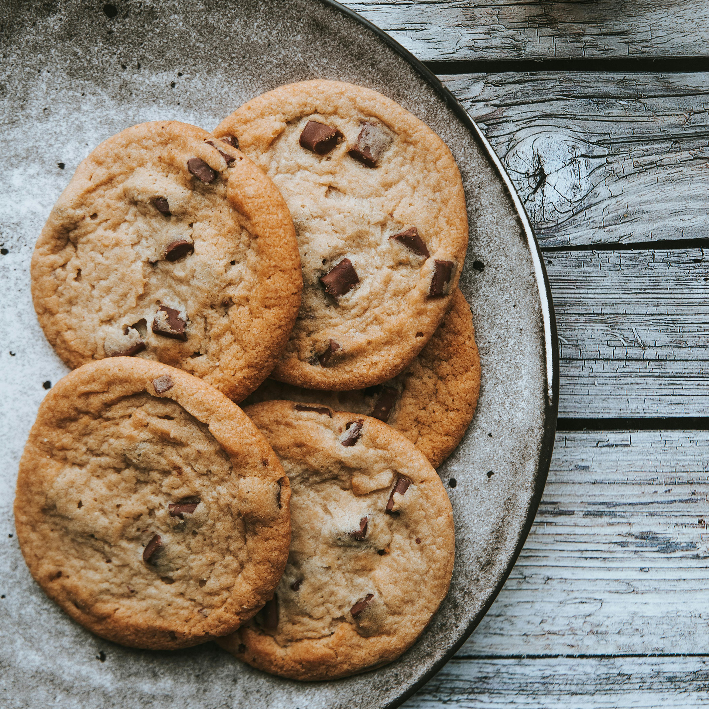

Odin Recipes
Here you'll find the best fake recipes online, for the Odin Project Class: Odin Recipes!
Good luck following these recipes!
Here you'll find the best fake recipes online, for the Odin Project Class: Odin Recipes!
Good luck following these recipes!

This is the best Cookie Recipe I've tried so far. They come out crunchy outside and gooie on the inside!
You can add your taste on fillings like amonds, nuts, raisens... go crazy!
Let's Go Cookie Crazy!